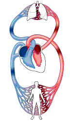

1. Al igual que la huella digital, la lengua es absolutamente única.
2. Un solo pelo puede sostener el peso de una manzana colgando
.jpg)
3. El número de bacterias en la boca de una sola persona, es igual al número de personas que viven en la tierra, o incluso mayor.
4. La velocidad de un impulso cerebral entrante es de unos 400 km/h.
.jpg)
5. En el transcurso de un día, nuestra sangre recorre en nuestro cuerpo la distancia de 19,312 km
.jpg)
6. Los hombres tambien tienen gládulas que pueden producir leche, pero su producción representa una anormalidad para el cuerpo masculino. Esto puede ocurrir cuando se produce demasiada hormona prolactina.
7. Un humano hace aproximadamente 20 000 respiraciones por día.
.jpg)
8. Casi todas las personas en el mundo tienen unos ácaros especiales en las pestañas llamados demodex.
.jpg)
9. Nuetras orejas siguen creciendo a lo largo de nuestras vidas con una velocidad casi increible, un cuarto de milimetro por año.
.jpg)
10. Una persona promedio consume cerca de 77 000 libras. (35 toneladas) de alimentos durante su vida.
.jpg)
11. Un humano pasa unos cinco años de su vida parpadeando.
12. Reacciones químicas se producen cada segundo en nuestro cerebro.
.jpg)
13. El corazón late 35 millines de veces al año.
.jpg)
14. Adiario, el cuaerpo humano muda alrededor de un millón de células de la piel - Lo que equivale a 4.5 Libras. (2 Kilos) cada año.
.jpg)
15. Un centimetro cuadrado de tu piel contiene al rededor de un centenar de censores de dolor.
16. El 26% de los hombres también experimentan SPM. Durante este periodo el hombre experimenta los mismos sintomas que una mujer.
.jpg)
17. Las mujeres lloran en promedio de 30 a 69 vece al año, y los hombres lloran solo 6 a 17 veces.
.jpg)
.jpg)
18. Sonreír activa 17 músculos faciales, mientras que lloras activa 43. Así que ¡sonrie más!
.jpg)
.jpg)
19. El rostro de un hombre conserva su aspecto juvenil mucho más tiempo que el rostro de una mujer.
.jpg)
.jpg)
20. La longitud total de todos los nervios en el cuerpo humano es de 75 km.
21. Los niños tienen menos popilas gustativas en la superficie de sus lenguas que los niños.
.jpg)
22. Los hombres pueden discernir menos tonos de color que las mujeres.
.jpg)
23. Las mujeres parpadean dos veces más que los hombres. Ademas, los corazones de las mujeres más rápido que los de los hombres.
.jpg)
.jpg)
24. La velocidad de un estornudo es de 100 millas por hora (140km/h).
.jpg)
25. Los músculos que ayudan a los ojos a cumplir sus funciones, cumpletan alrededor de 100 000 movimientos al día. Para que tus piernas hagan la misma cantidad de movimientos, necesitarias caminar 80 km al día.
.jpg)
26. El ácido que se encuentra en tu estomago es tan poderoso que podría disolver metal.
.jpg)
27. El cuerpo humano tiene muchísimos vasos sanguíneos que si los extendieramos en una linea recta alcanzarían los 96 560 km, más del doble de la circunferencia de nuestro planeta.

28. Producimos 2 litros de saliba cada día.
.jpg)
29. Tu cerebro puede almacenar 2,5GB de recuerdos y memorias.
.jpg)
30. EN tu cuerpo hay suficiente grasa como para hacer 7 barras de jabón.